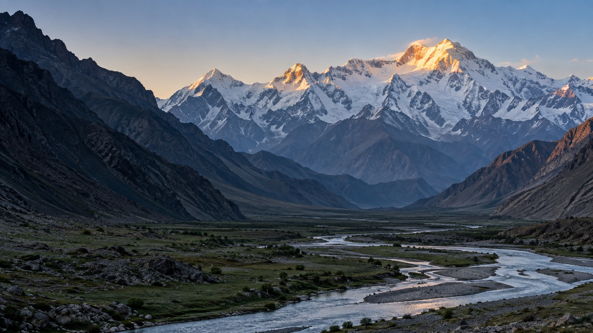
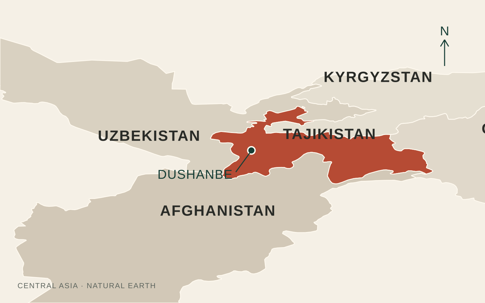
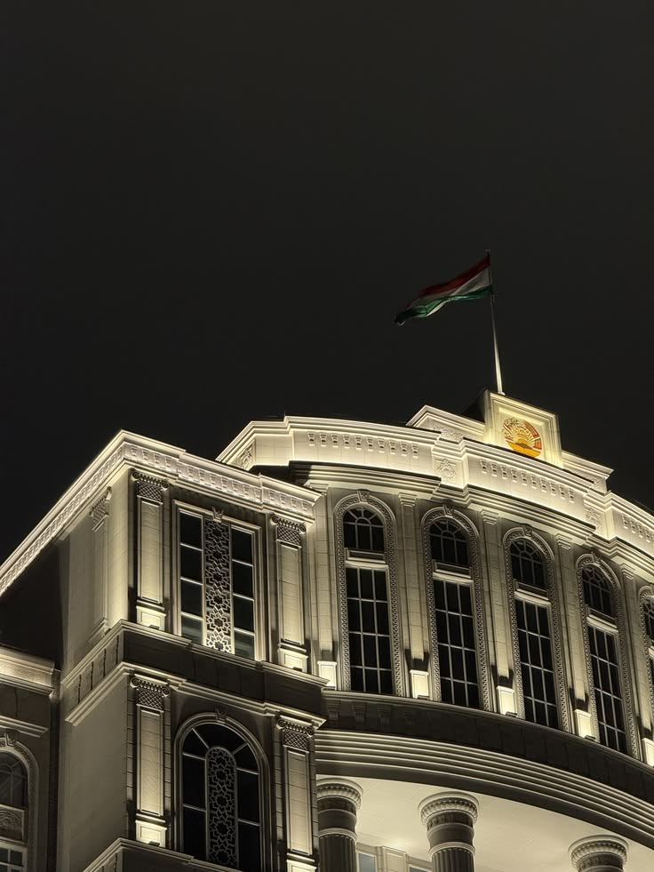
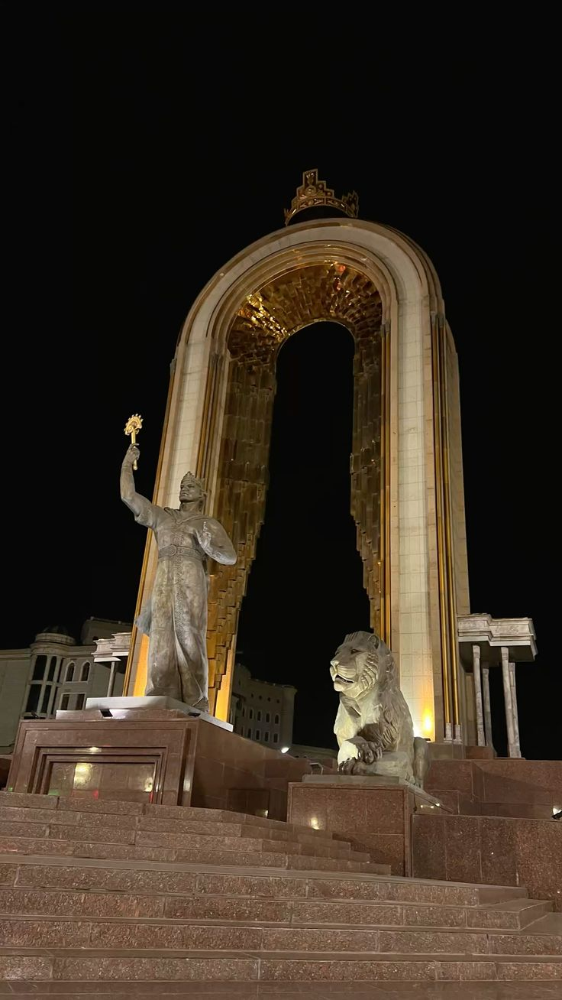
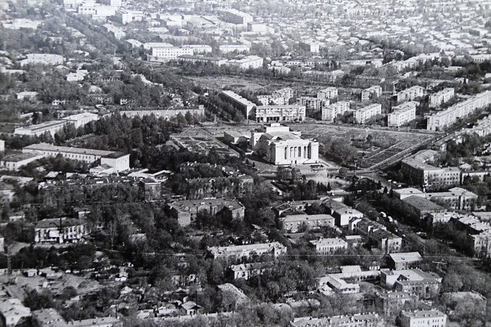
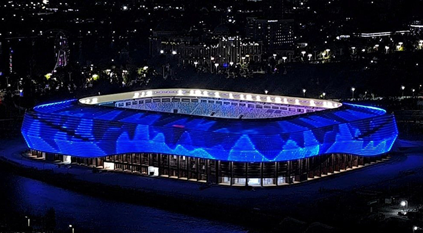
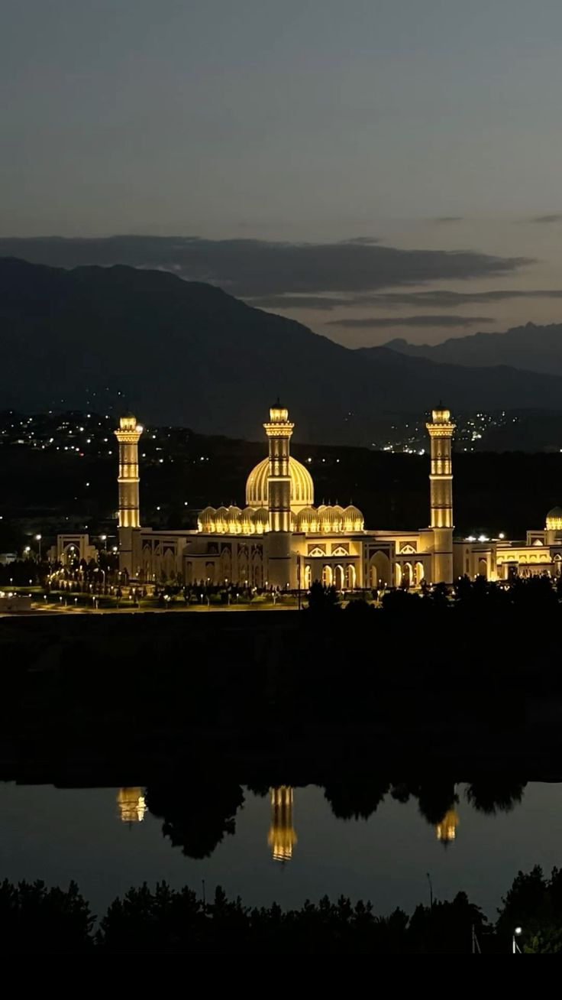
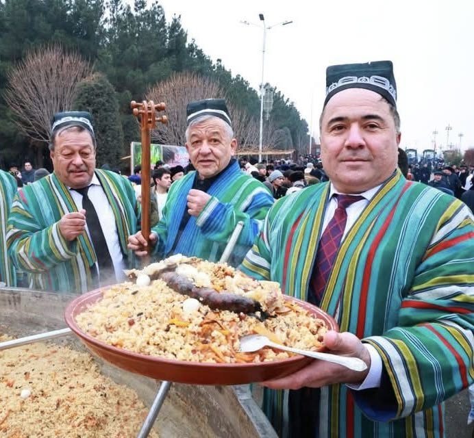
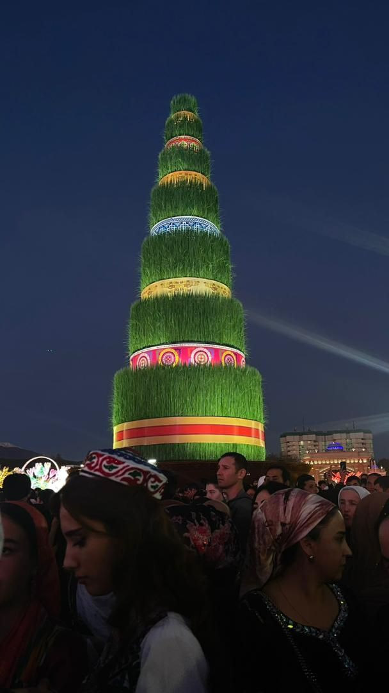
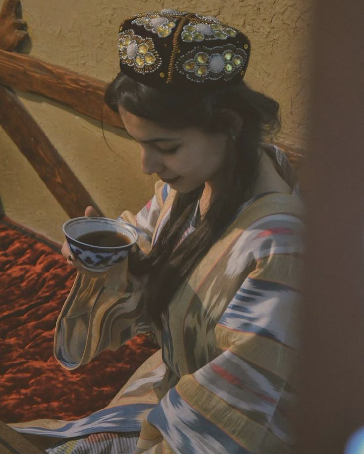

The country
Tajikistan
A home in the mountains
Abdullo Gafurov

The country
A small country.
A vast landscape.

The country
At the heart
of Central Asia
Four neighbours. One mountain home.

The country
A land of
high peaks
Mountains cover about 93% of Tajikistan.
Our president
Emomali
Rahmon
Born in Danghara in 1952.
President since 1994.

Our president
A national
honour
“Hero of Tajikistan” · 1999

Our symbols
Ismail
Somoni
A leader from our past, remembered today.

Our symbols
Our flag,
our story
Our symbols
The State Emblem
Our crown and seven stars rise above the mountains.


Our history
Sarazm
People lived and traded here over 5,000 years ago.

Our history
Hisor
Fortress
An old gateway to the past, near Dushanbe.

Our history
Iskanderkul
A high mountain lake in the Fann range.

Archive Dushanbe · 2026
Dushanbe · 2026杜尚别在过去几十年里发生了巨大的变化，从一座相对较小的苏联城市，发展成为一座现代化、不断发展的首都。它在20世纪20年代成为塔吉克苏维埃社会主义自治共和国的首都，并于1991年成为独立的塔吉克斯坦首都。如今，杜尚别拥有现代化的建筑、宽阔的街道、绿色公园，以及许多新的文化和体育设施。这座城市的发展展现了杜尚别如何走过一段艰难的历史，并向更加现代化、充满活力的未来迈进。
Dushanbe
City through
time
From a difficult turning point to a capital looking ahead.

Dushanbe
A new stage
for sport
National Stadium · opened 2026 · 30,000 seats
2026年8月，杜尚别新国家体育场正式启用，可容纳3万多名观众，并按照国际足联（FIFA）的标准建设。它成为杜尚别城市发展的新象征，也为国际足球比赛和大型体育赛事提供了现代化的场地。
Dushanbe · August 2026
Dushanbe
A place
to gather
The Grand Mosque at dusk.
杜尚别中央大清真寺是中亚地区最大的清真寺之一，室内和室外区域最多可以容纳12万名礼拜者。清真寺于2019年建成，并于2023年正式启用，将传统的塔吉克元素与优雅的伊斯兰建筑风格融为一体。现代化的城市、新国家体育场和中央大清真寺共同展现了杜尚别如何在保留历史的同时，充满信心地走向未来。


Our culture
Osh
Also called palov — rice, carrots and a table full of friends.
Made for sharing
Our culture
Qurutob
Bread, herbs and qurut — all in one dish.

Our culture
Sumanak
A spring tradition, shared at Navruz.

Our culture
Come in.
Have tea.
Mehmondori — the joy of welcoming a guest.
Our anthem
A song for
our homeland
Thank you
Thank you
for listening.
I am proud to share Tajikistan with you.